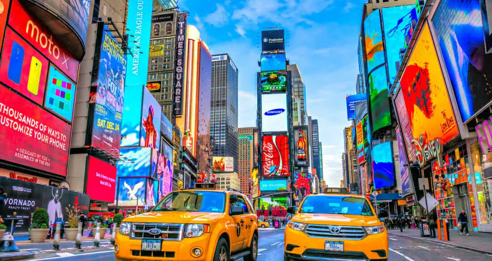

New York, États-Unis
New York, la ville qui ne dort jamais, est une métropole vibrante connue pour sa skyline emblématique, sa diversité culturelle et son énergie inégalée. Promenez-vous dans les rues animées de la Grosse Pomme et imprégnez-vous de l'atmosphère électrique de ses quartiers emblématiques.
Admirez la majestueuse Statue de la Liberté qui veille sur le port de New York et laissez-vous émerveiller par la splendeur de Times Square, illuminée par des panneaux publicitaires géants et pleine de vie à toute heure du jour et de la nuit. Explorez les trésors artistiques du Metropolitan Museum of Art, où vous pourrez découvrir des œuvres exceptionnelles allant de l'antiquité à l'art moderne.
Dégustez les délices culinaires de la gastronomie mondiale dans les nombreux restaurants et food trucks de New York et découvrez la romance dans l'air en vous promenant dans Central Park au coucher du soleil. Avec ses monuments emblématiques, ses musées de renommée mondiale et son ambiance cosmopolite, New York est une destination où chaque coin de rue révèle une nouvelle facette de son charme dynamique.
Informations supplémentaires :
- Population : environ 8.4 millions
- Langue : Anglais
- Monnaie : Dollar américain (USD)
- Climat : Tempéré
- Meilleure période pour visiter : De mai à octobre